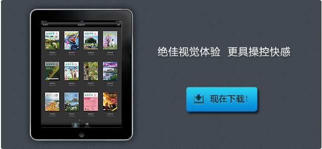

iPad电子杂志软件 - 概述
iPad电子杂志软件是瑞读网针对‘iPad’量身定制的电子杂志阅读软件。通过瑞读网制作的iPad电子杂志能够在苹果商店AppStore中进行发布和下载、阅读。
瑞读网iPad电子杂志的技术优势：
- 完美解决内存优化问题：不少iPad电子杂志在阅读时时常出现某些页面读取停顿，甚至崩溃退出的情况，这是因为iPad自身有限的内存容量而导致的。瑞读的iPad电子杂志完美解决了内存优化问题，即使有海量页面也不会影响阅读速度。
- 无需连线，随时阅读：瑞读的iPad电子杂志将所有图文、多媒体文件优化后整合为一个完整的离线程序，无需网络支持，在任何地点均可完整阅读所有的内容。
- 精美的定制型读取画面：可定制LOGO、形象图或是简单动画的加载界面，让载入的短短几秒也充满乐趣。
- 画面放大/缩小功能：支持非常贴心的缩放功能。 双指在屏幕上扩展，即可放大，捏合即可缩小。
- 可定制的版权/帮助信息：可根据客户需要定制文字或图片形式的版权和帮助信息。
- 书架管理，灵活下载：书架式架构，用户可单独下载某期或多期杂志，减少程序整体体积，便于定期出刊和推广。
- 灵活的销售方式：可于程序内单独购买单本、包月、包季度、包半年和包年订阅的购买方式，更加利于销售。
- 最短的制作周期和流程：瑞读总结出了科学有效的iPad电子杂志制作流程，可以确保及时于iPad中发布。
- 强大的研发能力：瑞读是一个年青人的团队，具备多年的数字出版行业经验，创新的意识已经埋于我们的血液之中。在iPad技术领域，我们一直保持着良好的研发速度，并不断将适合iPad的技术引入本项目中。

iPad电子杂志视频演示：